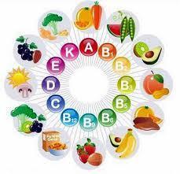
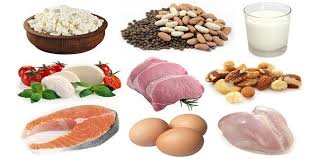

VÌ SAO CẦN ĂN UỐNG ĐÚNG?
• Giúp liền xương, phục hồi cơ
• Giảm nguy cơ nhiễm trùng, suy nhược
• Giúp đi lại sớm, tập phục hồi tốt
• Phòng táo bón do ít vận động và thuốc giảm đau

NGUYÊN TẮC ĂN UỐNG
• Ăn đủ bữa – không bỏ bữa
• Tăng đạm (thịt, cá, trứng, sữa)
• Ăn nhiều rau xanh, trái cây
• Uống 1,5–2 lít nước/ngày (nếu không chống chỉ định)
• Hạn chế đồ chiên, nhiều mỡ, rượu bia
1. 1–3 ngày trước mổ
• 3 bữa chính + 1–2 bữa phụ
• Ăn dễ tiêu: cơm, cháo, mì
• Đạm: thịt nạc, cá, trứng
• Rau mềm, trái cây dễ tiêu
• Tránh đồ chiên, khó tiêu
2. Trước phẫu thuật
• Ngừng ăn uống đúng giờ được dặn
• Không tự ý ăn uống